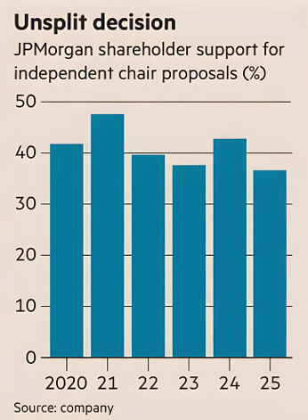

HSBC is struggling to find a replacement for chair Mark Tucker, pictured. A relatable problem, probably, to many British boards. BP just named a new chair; Prudential seeks one too.
Finding the right balance of experience and availability can be a real chore. Yet, if HSBC were based on the other side of the Atlantic, there might be a simple solution: give the job to the chief executive.
Nothing provokes pearl-clutching among UK investors and governance watchers as much as the idea of combining the chair and CEO roles. It’s simply not the done thing. Shareholder advisory service ISS calls it “a serious breach of good practice” given the chair’s importance in keeping the chief in check.
The UK’s corporate governance code asks companies to comply with the principle of separating the two jobs, or explain. Almost all comply.
Americans aren't fully convinced. About two-fifths of S&P 500 companies combine the two roles, including six of the biggest 10 by market capitalisation. And while the number is falling, shareholders still don’t seem to care much. This year, companies fielded 31 proposals to split the CEO and chair role, down from 44 in 2024, according to Freshfields. Not one received majority support; the average vote was 31 per cent in favour.
Supreme leaders are a recipe for misfortune. But separate chairs aren't the only way to hold the CEO’s feet to the fire. JPMorgan, like nearly two-thirds of S&P 500 companies that combine the jobs according to the Conference Board/ESGAUGE, argues this is the role of the lead independent director, whose job is to act as a liaison for shareholders and generally check the board is running as it ought to.
Having an independent chair is no guarantee of a well-behaved CEO either, as Tesla has amply shown. Putting too much emphasis on the chair risks turning down the volume on the other members of the board, who ought to be acting collectively to keep the company on track.
Better to have directors who are, say, tasked with making annual site visits and reporting back to the board than one strong personality who provides much of the impetus while others nod along.
Now is a good time for the UK to question long-held views. The pressure is on to attract companies lured by US markets, where valuations are higher and governance rules more flexible. Good governance should always command a premium, but the idea that splitting CEO and chair roles is sufficient — or really necessary — deserves debate.